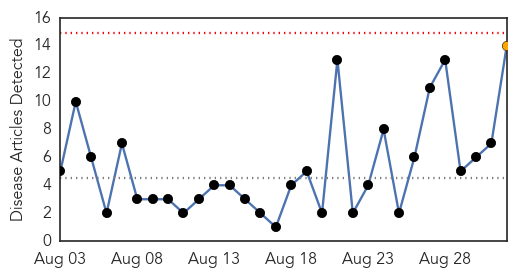
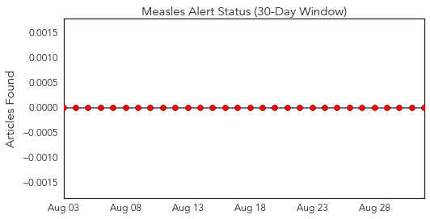
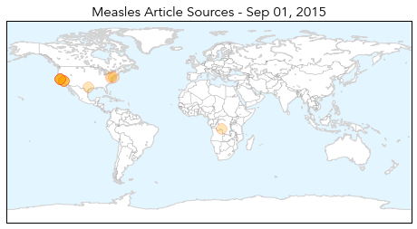
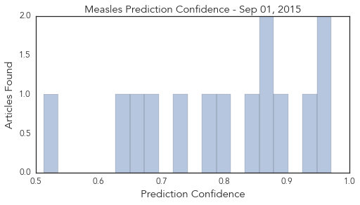

Measles
30-Day Web Trend
0 alerts, 1 warnings

30-Day Twitter Trend
0 alerts, 0 warnings

Article Locations
Article Confidences
Top Articles:
- 0.971
- Berkeley: Health care officials hope more vaccinations stop spread of measles
- 0.966
- Measles Health Alert
- 0.933
- Measles confirmed in UC Berkeley student, community encouraged to vaccinate
- 0.884
- Health Officials Confirm a UC Berkeley Student Has Measles
- 0.864
- Pennsylvania vaccination rates among worst in nation
- 0.860
- DRC: Katanga measles epidemic keeps worsening - Democratic Republic of the Congo
- 0.847
- Back-to-school preparations often exclude vaccines
- 0.798
- Berkeleyside
- 0.786
- UC Berkeley measles patient traveled to Contra Costa County while contagious
- 0.720
- Incubate learning, not infections
- 0.679
- Washington woman’s measles death is first in US since 2003
- 0.651
- UC Berkeley student tests positive for measles
- 0.627
- In Our View: Keep Our Students Safe
- 0.513
- UC Berkeley student diagnosed with measles Monday exposed community members
Top Tweets:
-
No tweets found for Sep 01, 2015
West Nile Virus
30-Day Web Trend
1 alerts, 0 warnings

30-Day Twitter Trend
1 alerts, 0 warnings

Article Locations

Article Confidences

Top Articles:
- 0.995
- Douglas County Confirms 1st Case of West Nile Virus
- 0.991
- Local public health department urges West Nile precautions
- 0.976
- West Nile virus kills elderly man from Chicago south suburb
- 0.968
- Authorities suggest caution after probable case of West Nile virus in the Algarve
- 0.958
- Second Human West Nile Case Surfaces in Washoe County
- 0.901
- Washoe County Horse Tests Positive for West Nile
- 0.895
- West Nile Virus discovered in Brown County
- 0.828
- First West Nile case this summer reported in Summit County
- 0.781
- West Nile virus turns up around southeastern Wisconsin
- 0.730
- Tippecanoe Co. Health: West Nile detected in mosquitoes
- 0.661
- IDPH: Mosquitoes Still a Threat
Top Tweets:
-
No tweets found for Sep 01, 2015